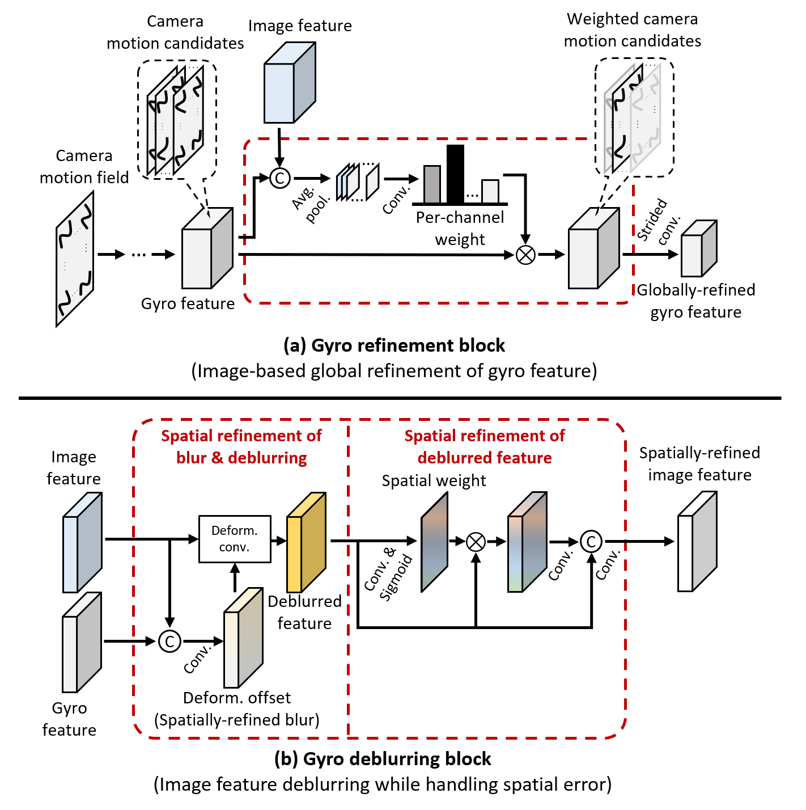

Heemin Yang, Jaesung Rim, Seungyong Lee, Seung-Hwan Baek, Sunghyun Cho
POSTECH
In this paper, we present GyroDeblurNet, a novel single-image deblurring method that utilizes a gyro sensor... (keep your abstract as is)
GyroDeblurNet takes a blurred image and its corresponding gyro data with errors...

...deblurring block...
The GyroBlur-Synth dataset is...


@misc{yang2024gyrodeblurnet,
title={Gyro-based Neural Single Image Deblurring},
author={Heemin Yang and Jaesung Rim and Seungyong Lee and Seung-Hwan Baek and Sunghyun Cho},
year={2024},
eprint={2404.00916},
archivePrefix={arXiv},
primaryClass={cs.CV},
url={https://arxiv.org/abs/2404.00916},
}